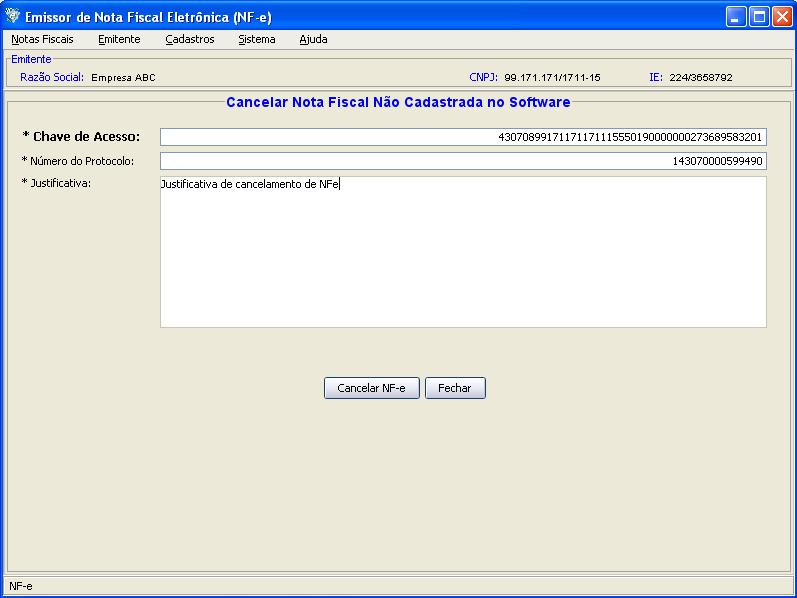
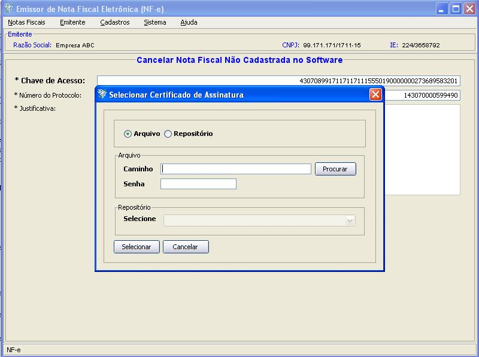
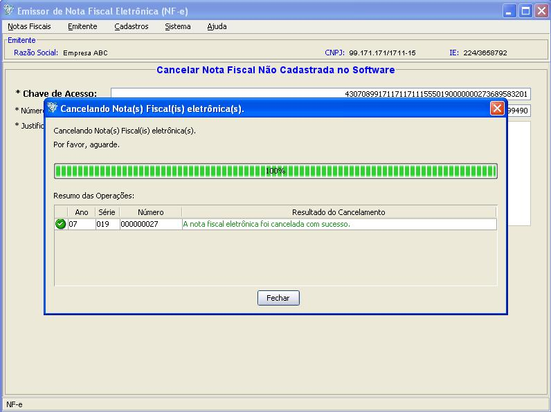
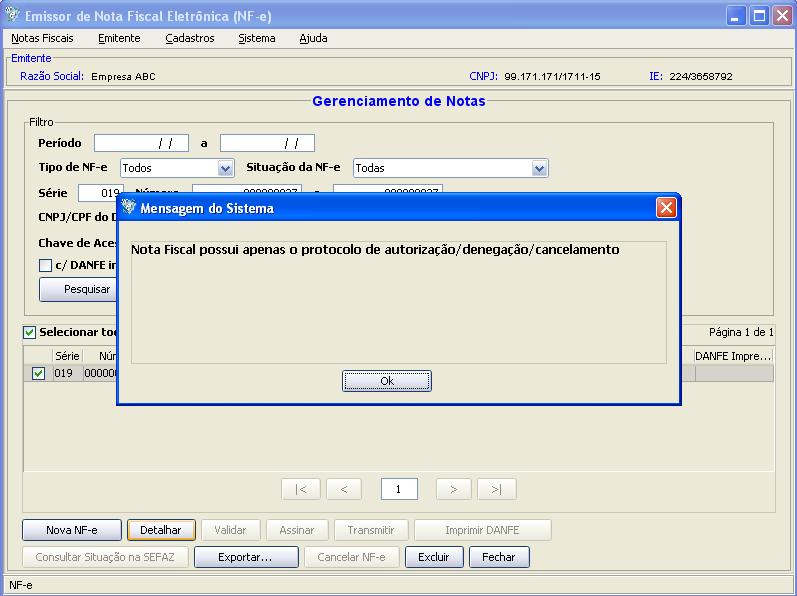

Software Emissor NF-e
Cancelar NF-e
não
cadastrada no Software
O cancelamento de NF-e's não cadastradas no Software permite
que
o usuário, através da Chave de Acesso,
número do protocolo de autorização e
informando a justificativa, cancelar a NF-e que encontra-se na SEFAZ
mas não está cadastrada no Software (exemplo: a
NF-e autorizada indevidamente excluída pelo
usuário, mas este guardou em outro local a Chave de Acesso e
o número do protocolo da NF-e).
Apenas NF-e's não cadastradas no Software poderão
ser canceladas desta maneira. Se for fornecido uma Chave de Acesso que
está cadastrada no Software, o aplicativo gerará
uma mensagem informando para realizar o cancelamento através
da
opção Cancelar
NF-e no Gerenciamento
de Notas.
Após o cancelamento, o Software armazenará a
operação de Cancelamento (ou seja, o protocolo de
cancelamento emitido pela SEFAZ estará disponível na
pesquisa no Gerenciamento de notas), mas não será
possível a visualização dos dados da NF-e, pois
somente teremos informações do cancelamento.
IMPORTANTE: O Certificado Digital deverá conter o CNPJ do
emitente e deverá ser o mesmo da NF-e que pretende-se cancelar.
Pré-condição:
-Um emitente
deverá estar previamente iniciado.
- Acessar o menu: Notas Fiscais -> Cancelar
NF-e não cadastrada no Software
- Digitar os 44
dígitos da Chave de Acesso da NF-e, o protocolo de
autorização e a justificativa do cancelamento
- Clicar em Cancelar NF-e
- Na janela de
seleção de Certificado Digital, escolher o
Arquivo (para
Certificado tipo A1), informando a senha, ou Repositório
(para Certificado tipo A3)
- Após a
seleção, clicar em Selecionar.
- O software Emissor NF-e
irá realizar o cancelamento, exibindo ao final se a
operação ocorreu com sucesso ou houve algum erro
Tela de Cancelamento de Nota Fiscal eletrônica não cadastrada no Software:

Ao cancelar, o usuário deverá fornecer o
certificado para assinar a solicitação de cancelamento e
realizar a transmissão:

O Software informará o resultado do cancelamento:

O Software armazenará o cancelamento, mas
não será possível ver as informações
da NF-e:
